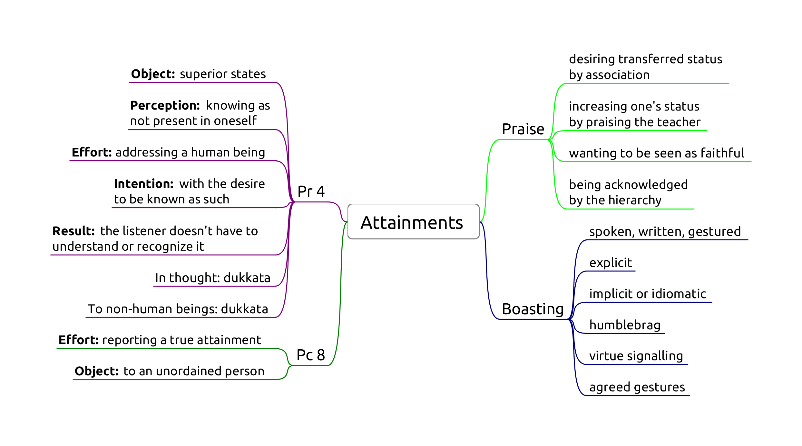

Attainments
- Pr 4, Lying about superior attainments
- Pc 8, Telling unordained person about actual attainment

Pr 4, Lying about superior attainments
Extreme case of lying (Pc 1).
Origin: During a period of drought and famine, certain bhikkhus praised each other's false attainments to the lay people so that they may have a comfortable Vassa. (Vibh. Pr 4)
"How can you for the sake of your stomachs praise one another’s superhuman qualities to lay people? It would be better for your bellies to be cut open with a sharp butcher’s knife than for you to praise one another’s superhuman qualities to lay people.
Why is that? Because for that reason you might die or experience death-like suffering, but you wouldn’t because of that be reborn in a bad destination. But for this reason you might."
Five great gangsters as bad monks:
- wanting to be honoured, revered and obtain gifts
- learning the Buddha's teachings and taking it as his own
- accusing a pure practitioner of the holy life of sexual intercourse
- taking and using Sangha property to create a following among lay people
- "But in this world this is the greatest gangster: he who untruthfully and groundlessly boasts about a superhuman quality. Why is that? Monks, you’ve eaten the country’s almsfood by theft."
Object: superior human states which are not accessible to mundane, ordinary people (puthujjana). States are categorized in three groups.
Mahaggata dhamma, 'expanded states'. Some are are supra-mundane if they depend on higher jhanas.
Lokuttara dhamma, 'transcendent states'. Always supra-mundane. Related to the eradication of the mental fetters. Nine: Nibbāna plus the four paths and their four fruitions.
Tiracchāna-vijjā, 'animal knowledge'. Always mundane. Examples are occult abilities, future-telling, giving protective charms, casting malevolent spells, psychic healing, practicing as a medium, etc.
Perception: knowing as non-existent, not present in oneself. If it is a mistaken claim out of overestimation, that would not be parajika.
Non-existent defined as "not to be found; not knowing, not seeing a skillful state within oneself, (yet saying,) 'There is a skillful state within me.'"
Effort: Addressing a human being. Speaking about the state withing oneself, or one being in the state.
Explicit:
- "I have attained the first jhāna"
- "I have seen the heavenly realms"
- "I know my previous lifetimes"
Implicit or idiomatic:
- "I delight in an empty dwelling" (referring to jhana)
- "I have no doubts about the Buddha's teaching" (referring to stream entry)
Humblebrag:
- "I am so dumb that before this retreat I didn't understand jhanas."
- "I am a really slow learner, but I don't have any doubt that the Buddha is right."
- "My meditation is nothing much, but you know, sometime you can see really interesting things..."
Virtue signalling:
- "I have learnt to bow like this from a real Forest Kruba Ajahn."
- "Those monks talk about football. How could they have even basic samadhi?"
Gestures by agreement:
- "The first who leaves their kuti is an arahant."
False claims made in thought are assigned a dukkata by the Buddha. (Story: seen by a bhikkhu who could read minds and a devata.)
Intention: to misrepresent the truth, motivated by an evil desire.
- knowing that it is a lie, aiming to misrepresent the truth
- motivated by an evil desire
Evil desire: that others may think of him as such.
Result: the understanding of the speaker and the listener.
The bhikkhu must understand that he is making a claim. The listener doesn't have to understand or recognize it.
Suggested states
Lay supporters may address a teacher with exaggerated faith: "May the venerable arahant explain to me...".
Suporters may suggest states: "We would like to invite four sotapanna monks to start a temple in our town.**
There is no offense in coming, sitting, etc., as long as the intention is just to accept the invitation and not to imply a claim.
To impress
Special practices (dhutanga, long periods of meditation, vegetarianism) out of the desire to impress others: dukkata. Blameless reasons out of desire to practice are not an offence.
Non-offences
- mistaken and exaggerated understanding of one's mental states
- not intending to boast, others trying to read a statement as an implied claim
Pc 8, Telling unordained person about actual attainment
Origin: similar to Pr 4, but with bhikkhus who boasted of true attainments of each other to get more food during a famine.
Effort: reporting a true attainment.
Object: to an unordained person.
Intention is not a factor, including motivations to inspire.
Good conduct between bhikkhus: Ven. Mogallana waits to relate his vision until in the presence of the Buddha.
Non-offences
- to a bhikkhu or bhikkhuni
- display of psychic power is not assigned an offence, but strongly critized by the Buddha (monk and the wooden bowl)